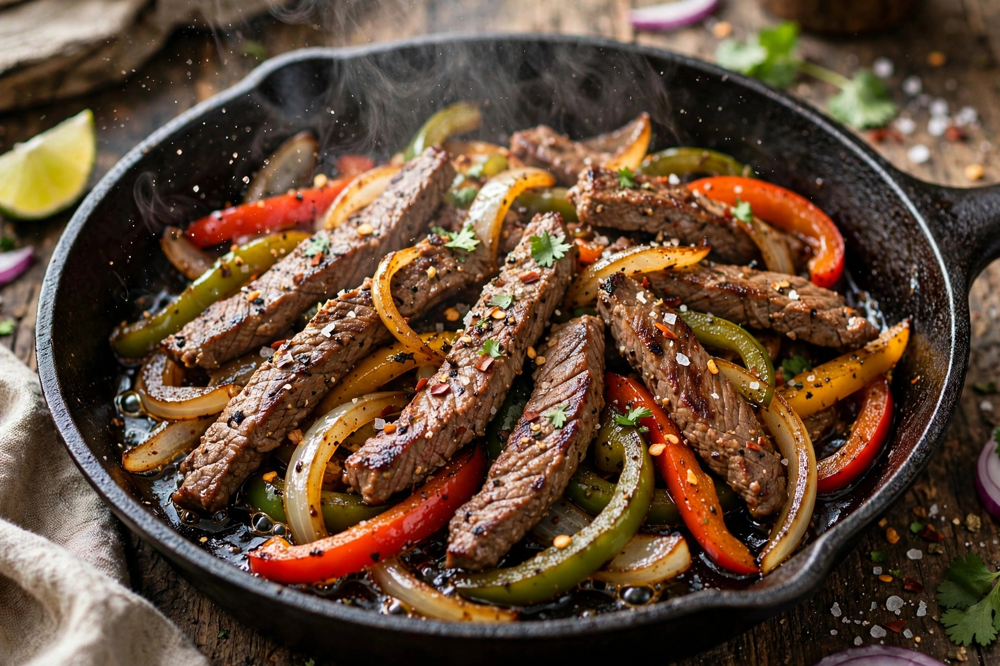

From Wikipedia, the free encyclopedia
| Fajita | |
|---|---|
 | |
| Type | Grilled meat dish |
| Place of origin | Texas / northeastern Mexico borderlands |
| Main ingredients | Skirt steak (or chicken), bell peppers, onions, flour tortillas |
A fajita is a Tex-Mex dish of grilled meat — originally skirt steak — cut into strips and served on a flour or corn tortilla, usually with grilled onions and bell peppers and accompaniments such as salsa, guacamole, sour cream, and cheese. The word fajita is the Spanish diminutive of faja, "belt" or "strip", referring to the cut of beef from the diaphragm.
Fajitas originated with Mexican vaqueros (cowboys) in the ranchlands of South and West Texas and northern Mexico, who were given the less-desirable skirt steak as part of their pay and grilled it over campfires. The dish was popularised commercially in the 1970s by Houston's Ninfa's restaurant, and the dramatic presentation on a sizzling platter helped spread it nationwide in the 1980s.
Today "fajita" describes the style of preparation as much as the cut: chicken, pork, shrimp, and vegetable fajitas are common, typically seasoned with lime juice, garlic, and chilli. The meat is sliced against the grain and eaten rolled in warm tortillas.